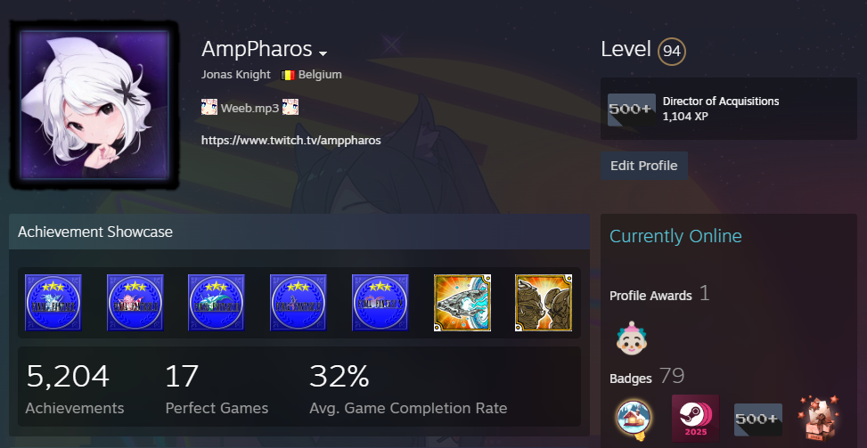
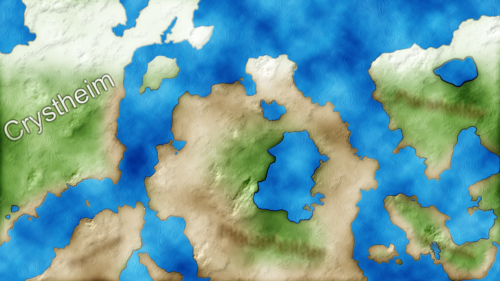

Life Beyond the Career
A look into personal interests, creative pursuits, and technical homelab engineering.
Gaming & High-Performance Hardware
I am passionate about diverse gaming genres and hardware performance optimization. My current high-performance workstation and gaming rig features:
- NZXT H9 Flow All Black Chassis
- Asus ROG STRIX X670E-E Gaming WiFi Motherboard
- Asus ProArt GeForce RTX 4070 Ti 12GB OC
- AMD Ryzen 7 7800X3D 8-Core Processor
- Corsair Vengeance 64GB DDR5-5600 RAM Kit
- 2x Samsung 990 PRO 2TB NVMe SSDs
- be quiet! Pure Power 12 M Modular 1000W PSU

Content Creation & Media Production
I enjoy producing and streaming gaming challenge runs and video content, utilizing professional-grade audio and video equipment to ensure high production standards. This pursuit allows me to refine video editing skills and connect with a broad technical community. My studio setup includes:
- Focusrite Scarlett 2i2 4th Gen Audio Interface
- Beyerdynamic DT 770 Pro Studio Headphones & Rode NT1-A Microphone
- Philips Evnia 49M2C8900/00 Ultrawide Primary Monitor
- Huion Kamvas Pro 16 Drawing Display
- Logitech G502 X Plus Mouse & MX Mechanical Keyboard
Passions & Creative Pursuits
I appreciate complex world-building and storytelling, actively engaging as a Dungeon Master for custom tabletop roleplaying campaigns.
In addition to narrative design, I have a deep interest in digital design, web layout aesthetics, and music composition, with ongoing plans to expand my proficiency into electric bass.
Outside of technical and creative hobbies, I maintain a disciplined physical fitness routine with regular gym workouts to ensure balance and focus.

Practical Labs & Homelab Architecture
To continuously sharpen my enterprise engineering competencies, I architect and maintain a robust, self-hosted homelab environment mirroring modern cloud and network infrastructure:
- Proxmox VE Host AskHand N100 Mini PC running Proxmox VE 9.1.5[cite: 5, 9], managing persistent LXC containers and VMs across tiered NVMe/SSD/HDD storage with real-time API monitoring.
- Containerized AI Stack: Self-hosted Open-WebUI instance running on Docker Compose for secure, private AI processing and automated workflows[cite: 5, 6].
- Network Edge & Security: TP-Link Omada ecosystem (managed PoE switches, Wi-Fi 6 access points)[cite: 5, 9]. Implements Pi-hole DNS sinkholes, Tailscale mesh VPN subnet routing, and Nginx Proxy Manager[cite: 5, 6].
- Self-Hosted Services: Deployed Home Assistant OS (HAOS), n8n workflow automation, Nextcloud secure cloud storage, OpenProject, and XWiki knowledge bases[cite: 5, 6].
- Workstation Node: ASUS ROG STRIX desktop running CachyOS Linux (Arch-based, Kernel 7.2+) with Hypervisor-Enforced Code Integrity (HVCI), Secure Boot, and DMA Protection enabled[cite: 8].